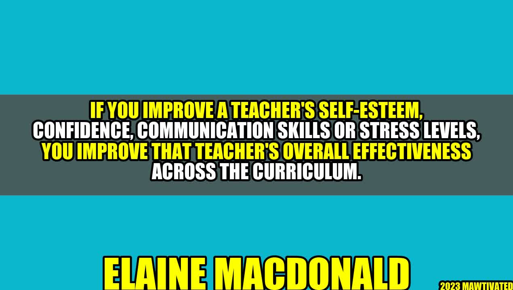

Transforming Teachers: Why Improving Their Self-Esteem is Crucial
An Inspiring Story about the Power of Empowering Teachers

Elaine MacDonald, a school principal in a rural town, noticed a concerning trend among her teaching staff. Many of them were feeling burnt out, uninspired, and ineffective in their classrooms. One day, during a staff meeting, Elaine decided to address this issue head-on.
"I believe in all of you and your abilities to make a difference in the lives of our students," she said. "But I also see that many of you are struggling. I want to offer resources and support to help you improve your self-esteem, confidence, and communication skills. Because when you feel better about yourselves, you'll be better teachers."
At first, some of the teachers were hesitant to accept Elaine's help. They were used to feeling unsupported and undervalued in their profession. But as they began to work through workshops and coaching sessions with Elaine, they noticed a remarkable change in their outlook.
They started taking risks in the classroom, trying new techniques, and engaging with their students more fully. They also began collaborating with each other more effectively, sharing ideas and resources and building a sense of community among themselves. By the end of the school year, the school had seen a noticeable improvement in academic performance and student engagement. But even more remarkable was the transformation of the teachers themselves. They were happier, more confident, and more effective in their roles than ever before.
The Importance of Self-Esteem, Confidence, Communication Skills, and Stress Management
Elaine's story is a great example of the power of empowering teachers. But why are self-esteem, confidence, communication skills, and stress management so important for teachers?
Self-esteem: When teachers have high self-esteem, they are better equipped to handle the challenges of their profession. They are less likely to take negative feedback personally and more likely to see criticism as an opportunity for growth. They are also more likely to be resilient in the face of setbacks, which is an essential quality for anyone in a high-stress environment.
Confidence: Confidence is closely related to self-esteem. When teachers feel confident in their abilities, they are more likely to take risks, try new techniques, and think creatively in their classrooms. They are also more likely to command respect from their students, colleagues, and parents.
Communication skills: Teachers are constantly communicating with their students, colleagues, and parents. Effective communication is essential for building relationships, setting expectations, and resolving conflicts. When teachers have strong communication skills, they are better able to convey their ideas and connect with others in a meaningful way.
Stress management: Teaching is one of the most stressful professions out there. Teachers are juggling a wide range of responsibilities, managing challenging behavior, and working long hours. When teachers have effective stress management skills, they are better able to cope with the demands of their job without becoming overwhelmed or burnt out.
Examples of Successful Teacher Empowerment Programs
In recent years, there has been a growing recognition of the importance of teacher empowerment. Many schools and organizations have begun to develop programs and resources aimed at improving teachers' self-esteem, confidence, communication skills, and stress management.
Here are some examples of successful teacher empowerment programs:
Positive Behavioral Interventions and Supports (PBIS): PBIS is a school-wide approach to behavior management that emphasizes positive reinforcement and proactive strategies. PBIS has been shown to improve student behavior and academic performance while reducing the negative impact of stress on teachers.
The Mindful Schools Program: The Mindful Schools Program is a mindfulness-based training program aimed at equipping teachers with the skills they need to manage stress, improve their emotional intelligence, and enhance their effectiveness in the classroom.
The Self-Efficacy Leadership Program: The Self-Efficacy Leadership Program is a teacher professional development program that focuses on building self-efficacy and leadership skills. The program has been shown to improve teacher efficacy, job satisfaction, and student achievement.
The Teacher Leadership Initiative: The Teacher Leadership Initiative is a program designed to help teachers develop leadership skills and take on additional responsibilities in their schools. The program has been shown to improve teacher retention rates and student achievement.
Conclusion: How to Empower Teachers in 3 Easy Steps
Improving teacher self-esteem, confidence, communication skills, and stress management is crucial for creating effective, positive, and sustainable learning environments. But how can you empower teachers in practice?
Here are three easy steps you can take:
Provide resources and support: Teachers need access to coaching, workshops, and other resources to develop their skills and boost their confidence. Providing these resources can go a long way in building a culture of empowerment.
Encourage collaboration and sharing: Teachers should be encouraged to collaborate and share resources and ideas with each other. This can help build a sense of community and foster a culture of continuous learning.
Celebrate successes: Teachers need to feel appreciated and valued for their hard work and dedication. Celebrating successes and acknowledging achievements can go a long way in building morale and improving teacher self-esteem.
Curated by Team Akash.Mittal.Blog
Share on Twitter Share on LinkedIn